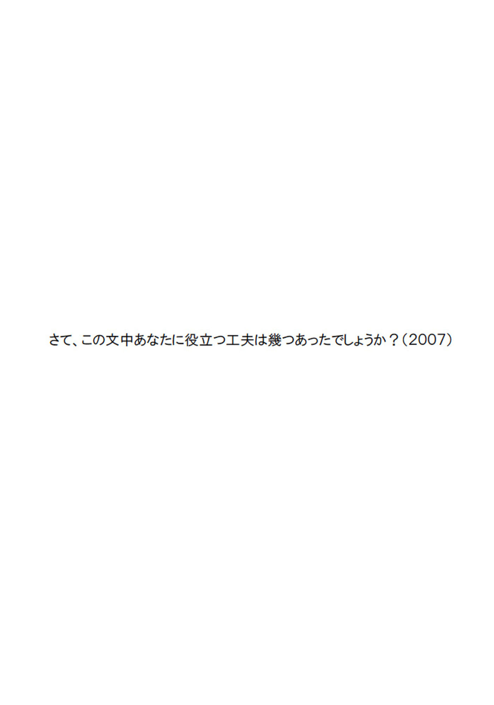
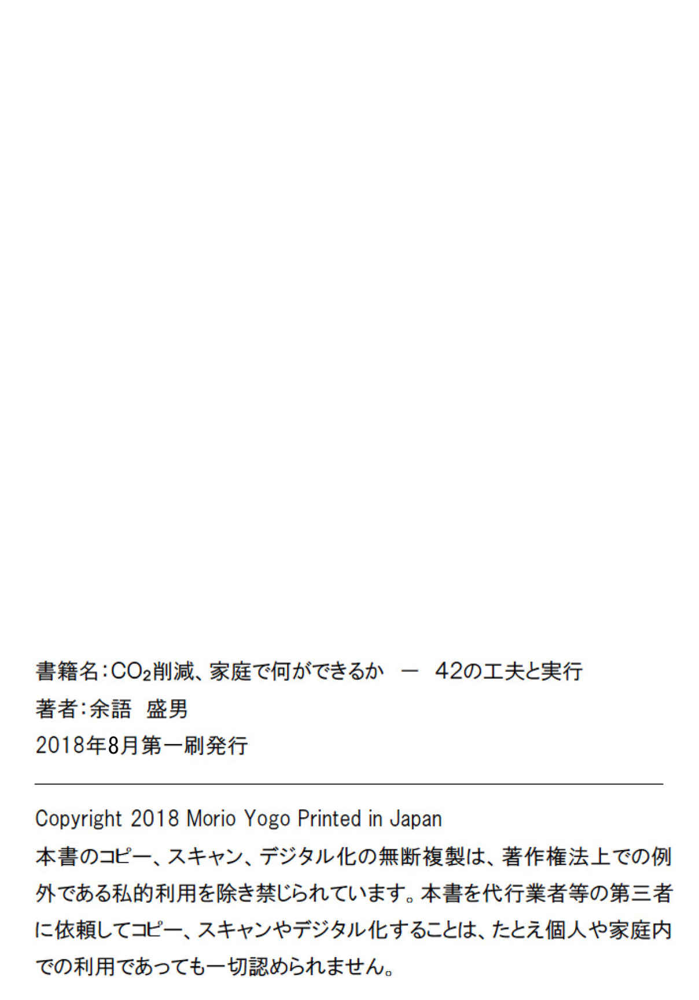

| ＣＯ２削減、家庭で何ができるか －４２の工夫と実行 | |
| 余語盛男 | |
| (2018) | |
ここでは、ゴミを５分の１にする方法、クーラーの消費電力を８分の１にする方法、同じ天ぷら油を１５回繰り返し使う方法、レジ袋を２０分の１にする方法等が述べられています。これらは裏わざでもなければ、手品でもありません。ちょっとした工夫、多少の手間を惜しまない気持ちがあれば、誰にでも出来ることです。私は以下に述べる方法でこの１１年間に３８％
のＣＯ２削減を実行しました。
私の主夫歴は１５年程度、しかもほとんど自己流です。ですから、ベテラン主婦の方から見ると変テコな事も沢山書いてあります。例えば「ジャガイモの皮は包丁で剥くな」とか「レストランで使った紙ナプキン（大）は必ず持ちかえれ」というような事です。でもこれらの事がこれから役立つのです。
１９９７年京都議定書で日本はＣＯ２、６％
の削減を世界に約束しました。ところが、２００５年、減るどころか8.1％
増えてしまっている。特に家庭生活部門では37.4％
も増えています。地球の現状は極めて深刻で、少なくとも２０２０年には２０～３０％
の、２０５０年には５０％
の削減をしなければ地球の温暖化は食い止められないと国連ＩＰＰＣが報告しています。
ですから家庭生活においても、いままでの常識を全部疑って見る必要があるのです。ここに書いてある事は一見へんテコでもその時役立つものがあると思います。
目次
（１）まず食べ物を捨てない
（２）「食材完食」これを貫徹します
（３）冷蔵庫内の総点検を毎月１日にやります
（４）とりあえず今何を食べなければならないか
（５）スーパーを自宅の食品庫と思え
（６）賞味期限は場合によっては無視する
（７）チルドルームは日本の発明
（８）キャベツは一ヵ月もちますか？
（９）キノコの保存は不織布の袋で
（１０）ジャガイモの皮は包丁で剥くな
（１１）大根、人参の皮はどうする
（１２）食べ残しはどんなに少量でも大切に取って置いて後で食べる
（１３）京都議定書は守れるのか？
（１４）耐乏生活など惨めな事は考えないでいい
（１５）１年間に１２億トンとは何か？
（１６）ガソリン１Ｌで2.3kgのＣＯ２が出ます
（１７）「石油は３倍返し」と憶えて下さい
（１８）ゴミを５分の１にする方法
（１９）原稿用紙の失敗は「丸めてポイ」しない
（２０）紙資源ゴミにしてはならない物
（２１）不燃ゴミは名刺大に切り刻む
（２２）ペットボトルは潰して出していますか？
（２３）プラスチックごみの回収再生
（２４）あなたはペットボトルのミネラルウォーターを買いますか？
（２５）今、東京の水道水はなぜ美味しいのか？
（２６）ミネラルウォーター：値段とＣＯ２排出量は何百倍？
（２７）食洗機を使わず、手で洗うと膨大な量の水が要るのか？
（２８）日本人は浪費の民か
（２９）あるケチな人の食器洗い術
（３０）真冬でもお湯はコップ一杯で十分です
（３１）レストランで使った紙ナプキン（大）は必ず持ち帰る
（３２）油を下水に流すとなぜ悪いのか
（３３）油汚れが「スーッときれいになる洗剤」
（３４）同じてんぷら油を１５回繰り返し使う方法
（３５）てんぷら油は無限に使える？
（３６）私が省エネルギーに目覚めた頃
（３７）①
お湯を一滴も使わなくても月に１６０kWh電気を喰う洗面所ボイラー
（３８）今ならエコキュートでしょう 地球に優しいって言うし...
（３９）⑤
どこの家にもある湯沸かしの電気ポット
（４０）ヤカンのお湯は必ず使いきる
（４１）④
トイレの便座温め、温水で３６０万トンのＣＯ２が
（４２）⑥
衣類乾燥機
（４３）洗濯機の注水すすぎ、ためすすぎ
（４４）床暖のこと 無暖房住宅のこと
（４５）ウォームビズの考えは賢い
（４６）テビロンという素材を知っていますか？
（４７）灯油暖房はＣＯ２放出多すぎ
（４８）せっかく日本には四季があるのだから
（４９）冷房の消費電力を８分の１にする方法
（５０）（ａ）なるべく最新の機械に買い替える
（５１）（ｃ）なるべく冷房のボタンを押さず送風のボタンを押す
（５２）熱帯夜に（ｃ）「送風」が威力
（５３）（ｂ）冷房をケチに使う
（５４）冷房の機械を買い替えて「送風」も活用し、ケチに使う実験
（５５）冷房の新しい技術に期待
（５６）節電 Ⅰ
．小さいテレビがメイン 大きいテレビがサブ
（５７）節電 Ⅱ
．電球型蛍光灯はＣＯ２削減のクリーンヒット
（５８）マイカーは持っていません
（５９）タクシーにもめったに乗らない
（６０）自転車は２１世紀の乗り物
（６１）とにかく歩くことが一番
（６２）飛行機の石油消費は桁違い
（６３）レジ袋を２０分の１にする方法
（６４）最良の買い物袋は実はレジ袋なのです
（６５）朝日新聞２００７年１月２０日の「声」欄
（６６）上の補足説明
（６７）街頭にある飲み物の自動販売機についてのこだわり
（６８）その他キッチンでの小さな工夫
（１）まず食べ物を捨てない
日本では２００３年１年間に１９７２万トンの食べ物を捨てました。家庭での食べ残し、冷蔵庫の中で虚しく腐らせてしまうもの、スーパーやコンビニ、商店での売れ残り、ホテルやレストランでの残飯ｅｔｃ．合計で１９７２万トン。ところで日本中で１年間に炊くお米のご飯の総量は何トンかご存知ですか？１７４０万トンです。何と！日本人は「毎日毎日炊いたご飯を一粒も食べないで全部ゴミ溜めに捨てている」よりも２００万トンも多い食べ物を捨てているのです。世界で８億５０００万人以上の人々が飢えや栄養失調に苦しんでいる時にこんな事をやっていて良い筈がありません。
（２）「食材完食」これを貫徹します
食べ物を捨てないということは「食材完食」ということです。そのためには今、この家にどんな食材、食物があるかを完全に把握していなければなりません。これを基本として、色々な「食材完食」の方法が展開します。
（３）冷蔵庫内の総点検を毎月１日にやります
冷凍庫のものは全品リストアップ、チルドボックスの物も同様、冷蔵庫内のものは全部点検して要注意の物のみリストアップ。野菜は野菜室のものも玉葱や生姜のように庫外にあるものも全品リストアップします。肉を冷凍する時は一般にやられているように、１００グラムずつラップに包んでありますから、鶏もも肉３、鶏むね肉２のように簡単に書けるので、２人暮らしの我が家の場合全リストがＡ４の紙半分くらいに収まってしまいます。後は適宜書き加えたりしていきます。一月に２回やろうとすると続きません。
（４）とりあえず今何を食べなければならないか
この作業で、とりあえず今何を食べなければいけないかが明確になり、たちどころに１０個ぐらいのメニューが組みあがります。その後は食べたいメニューを考えながら随時買い足していき、なるべく美味しいうちに全部食べきる。
（５）スーパーを自宅の食品庫と思え
食材を無駄にしない為にはまず買いすぎない事です。安いからといって、必要以上に買わない。必要なものをできるだけ少なく買う。時として割高になりますが、無駄にするよりましです。スーパーを自宅の食品庫と思えば沢山買い込むことはありません。
（６）賞味期限は場合によっては無視する
食品の賞味期限は各食品会社が実験をして決めます。実験上１０日と出ても７日として売り出すのが一般的と聞いています。一つは食物保存のルーズな消費者でも安心して食べられる為。もう一つは商品の回転をよくする為です。
冷蔵庫などできちんと管理し保存すれば賞味期限を少し過ぎた物でも十分美味しく食べられます。賞味期限切れ寸前での安売りは大喜びです。
あるデータによると、賞味期限切れ後、豆腐、竹輪、納豆は７日、うどん、油揚げは５日、牛乳は１３日、卵は１４日、ケチャップは１年半たっても大丈夫だとのことです。もちろん自己責任ですから他人に食べさせるのは問題ですが、賞味期限が切れたと言って慌てて捨てることは全くありません。
（７）チルドルームは日本の発明
チルドルームというのはメーカーによって名称が違いますが、冷蔵庫内にあって温度１～４℃
に保ってある一画です。これは日本の発明品でして「お刺身を美味しく食べたい」が為に水産業界と電機業界が協力して開発したもので、外国には無いものだとのことです。
この温度領域では微生物は死にませんが、一般的には繁殖しないので肉、魚、練り物などの保存に適します。賞味期限寸前の物もここへ入れて置けば１週間ぐらい寿命が延びますし、特に凍らせてはまずいものには良いです。私は新米主夫の頃、茹でた野菜が意外と腐りやすいのを知らず、冷蔵庫内で空しく腐らせてしまいましたが、今はここへ入れているので安心です。
（８）キャベツは一ヵ月もちますか？
我が家は二人暮らしなのでキャベツ１個を食べるのに何日もかかります。食べ切らない内に腐ってしまっては困ります。でも、ある方法を使えばキャベツは１か月後もパリパリの鮮度で食べられます。レタスも２週間ＯＫ、三ツ葉も１０日間大丈夫です。
そのある方法とは、グリーンの保存袋「愛菜果」を使うということです。この袋は大谷石の粉末を練り込んだポリエチレンフィルムで出来ています。大谷石は植物の老化促進ホルモンであるエチレンガスを吸着、透過させる性質があります。また適度の気体透過性、透湿性がありますので野菜や果物をこの袋に入れて密閉すれば鮮度が保てます。キャベツやレタスはザラ紙のような大きな紙に包んでから入れた方がいいです。この袋は洗えますし、穴が開かないかぎり使えます。（東急ハンズで大小ロング各６枚１６８円です）
（９）キノコの保存は不織布の袋で
キノコの保存には湿気がこもらない方がいいので、不織布の袋を使っています。この袋は本来は流しの排水口のカゴに用いる水切り用ゴミ袋で回収ペットボトルから作ったポリエステル繊維を不織布にしたものです。適度の通気性があり、油を吸着し、もちろん濾過性能もいいので、多用途に使えるすぐれものです（２６×１２㎝
、２２枚１９８円、ダイエー系スーパーで売っています）。ついでに、ニンニクの保存には素焼き筒型容器がいいです。（銀座テプコで買いました、８４０円）
（１０）ジャガイモの皮は包丁で剥くな
ジャガイモの皮を包丁で剥くと「皮」と思っていたものの８０％
は実は「み」なのです。可食部分を減らしてゴミを増やす。一挙両得の反対「一挙両損」です。生のジャガイモの皮だけをきれいに剥く方法があります。それは流しの桶で水につけながらスチールのたわしで擦るという方法です。以前、新ジャガを亀の子ダワシで洗っていたら皮が剥けたので普通のジャガイモならスチールかなと思ってやってみたのです。水の中の皮は先程の不織布の袋で濾して乾かしてから生ゴミへ捨てます。
（１１）大根、人参の皮はどうする
蕪は皮を剥くと煮崩れしやすいのでいわゆる「ナイロンたわし」でこすって「お掃除」をするということが一般に行われています。「ナイロンたわし」と言ったのは研磨材の入ったポリエステル不織布の５mm位の厚さのもので、あの濃緑のものですが、これを大根にも人参にも応用します。もちろん大根の皮の部分を漬物にしようとかする時は包丁で厚くむきますが。このように我が家では野菜の皮を剥かないのが原則です。しかしリンゴの皮は剥くし、モヤシの根は取るし、勝手といえば勝手です。
「野菜クズ」というと必ず出て来るのがキャベツの外葉ですが、八百屋で売っている程度のものなら茹でてよく水にさらせば、炒め物として美味しく食べられます。前に、若い人が大根葉やネギの青い葉を捨てているのを見てビックリしました。
（１２）食べ残しはどんなに少量でも大切に取って置いて後で食べる
ご飯は一粒残らず、おかずも一片残らず食べるのが原則ですが、もちろん食べ残すこともしばしばあります。しかし残り物はどんなに少量でも大切に保存し、後で食べます。決して捨てることはしません。それで時に応じて、作り置きのものも含め、「残り物大会」を開きますが、この時は我が家でもいつになく皿が並びます。
ここまでゴミを５分の１にする方法の第一部です。
～～～～～～～～～～～～
（１３）京都議定書は守れるのか？
ここで総体的な話をしましょう。
京都議定書では日本は２００８年～２０１２年の間に１９９０年のＣＯ２排出量に比べ６％
ＣＯ２を削減することが定められました。
ところが２００５年現在、減るどころか逆に8.1％
増えてしまったのです。特に家庭生活部門では37.4％
も増えています。これをどうやってー６％
にするのか？約束の年は来年に迫っています。政府は何をしているのか？環境税制とか有効な政策を出しているのか等のこともありますが、自分ひとりでも出来る事は沢山あります。工夫しましょう。
（１４）耐乏生活など惨めな事は考えないでいい
現代の文明社会の生活レベルを維持しつつ、エネルギーや資源の無駄を徹底的に削ぎ落とすことによって、それは十分に可能です。現に私はこの１１年間で３８％
のＣＯ２削減を実行しています。この４月、環境省のチーム・マイナス６％
から「環境家計簿」というものを貰いました。自分の日常生活での電気、ガス、水道、ペットボトル、ごみなど１３項目について計算しＣＯ２の排出量を算出するものです。我が家は２人で１９９４～１９９５年の２４ヶ月平均で１ヶ月274.1kg、２００５～２００６年の２４ヶ月平均で１ヶ月168.8kgのＣＯ２を出しましたが、この間の１１年で38.4％
のＣＯ２削減が実現されています。しかしこれはエネルギーの無駄をなくす努力をしただけで、惨めな耐乏生活をしていた訳ではありません。毎日お風呂かシャワーに入っていますし、テレビの好きな番組は全部見ています。
（１５）１年間に１２億トンとは何か？
２００５年（平成１７年）１年間に日本は１２億７９００万トンのＣＯ２を排出しました。国民一人あたり丁度１０トンです。これには工業生産や運輸などみんな入っています。家庭生活とマイカーに限ると約２トンです。月に１人１６７kg、１日１人5.5kgを電気、ガス、マイカーetc．の使用という形でＣＯ２を出しているのです。
「１人１日１ｋｇ減らそう」という呼び掛けがあります。これで十分とは思いませんが第一歩としてはいいでしょう。でも何をどう減らしたらいいのか？
（１６）ガソリン１Ｌで2.3kgのＣＯ２が出ます
このような具体的な数字を是非覚えて下さい。
電気１kWh（キロワット時）で0.39kg、ガス１ｍ３（立方メートル）で2.1ｋｇ、水道水１ｍ３で３６０ｇです。ペットボトル１本捨てるとＣＯ２が７０ｇ出ます。逆に考えればそれだけ減らせるという事でもあるのです。
（１７）「石油は３倍返し」と憶えて下さい
「石油は３倍返し」と憶えて下さい。雨の日にビルの玄関に備えてあるあの細長いポリ袋あれ１枚（２ｇ）を捨てると６ｇのＣＯ２が発生します。つまり、３倍になって返ってくるのです。ペットボトル１本からは７０ｇ、ガソリン１Ｌ（７５０ｇ）を使って車を走らせると前述のとおり2.3kgのＣＯ２が出ます。
石油や石油製品、電気（電気も石油製品の一種です）は便利で必要なものですが、無駄使いしないように常に気をつけましょう。
～～～～～～～～～～～～
（１８）ゴミを５分の１にする方法
２００６年、我が家のゴミ出し量は１人１日、可燃ゴミが１１３ｇ不燃ゴミが３３ｇ、合計では１４６ｇでした。これは東京都民（２００４）の平均７１６ｇの５分の１です。庭がないので生ゴミで堆肥を作ることはしていません。
我が家では可燃ゴミは５週間に１回、不燃ゴミは３ヶ月に１回ぐらいしか出しません。夏期に生ゴミを５週間も溜めておくなんてと思う人は、小単位で出してもいいのですが、我が家ではスーパーでいくらでも呉れるあの薄いポリ袋を２重にして、その中にため込み、いっぱいになったら口を密閉して４５Ｌのゴミ袋にポンポンと入れて行き、間に紙ゴミを詰めるという方式を永年とっています。もちろん茶がら、コーヒーがら、ジャガイモやスイカの皮などは乾かしてから捨てます。ゴミを減らす方法は色々あります。
（１９）原稿用紙の失敗は「丸めてポイ」しない
しないで、丁寧に伸ばして紙資源にまわします。コピーの失敗、要らないコピー、ダイレクトメール、パンフレット、包装紙など新聞の折り込み広告と同じに扱える紙ゴミは全て紙資源に回します。勿論、新聞雑誌も出します。紙ゴミの大半は資源です。
（２０）紙資源ゴミにしてはならない物
もちろん何でも資源になるという訳ではありません。まず接着部のあるものはその部分を除去してからでないと資源になりません。ポリフィルムの窓、プラスチックのコーティングのある紙も駄目です。ですから封筒は大変です。切手や接着部分を除き、窓のプラスチックを除くと面積はかなり減ります。「パパ、そこまでやるの」という声を背中に受けながらこの地味な作業を続けているのです。
（２１）不燃ゴミは名刺大に切り刻む
不燃ゴミはイチゴパックの様な箱状のものは各面に開いて、名刺大に切り刻みます。卵のパックの様に繰り返しのあるものは２ケずつに切って重ねます。袋、シート状のものは１５枚ぐらい重ねてロール状に巻いてしばります。このようにすると体積は約５分の１になります。重量が変わらないのに体積だけ減らしてどうするのかと思うのかも知れませんが、全ての人がこれをやれば、ゴミ収集車５台要るところを１台ですむのです。単純計算で石油燃料の８０％
が節約されます。もちろん不燃ゴミは洗って乾かしてからやります。
（２２）ペットボトルは潰して出していますか？
ペットボトル回収のトラックを見ているとまるで空気を運んでいるように見えます。ペットボトルは足で潰すと３分の１の体積になります。トラック３台が１台ですみます。もちろんペットボトルは必ず洗って水を切ってからです。出来るだけしっかりした靴を履いてやりましょう。コーラ系は全体重を懸ける必要があります。１Ｌ、２Ｌの大型ビンはパン切りナイフと大きいハサミで解体して下さい。ペットボトルは前にも述べたように、５００mlのもの１本で７０ｇのＣＯ２を出すことを常に念頭に置いて下さい。因みにアルミ缶は１７０ｇ、スチール缶は４０ｇＣＯ２を排除します。
（２３）プラスチックごみの回収再生
発泡ポリスチレンのトレー、ペットボトルは既に回収、再生がされています。私が住んでいる千代田区では０７年１０月から「プラ」マークの付いたプラスチック容器全てが回収再生されることになりました。大変良い事です。しかし、回収にも再生にもエネルギーがかかります。そこからまたＣＯ２が出るのです。そもそもの使用を控えるのが大切です。
（２４）あなたはペットボトルのミネラルウォーターを買いますか？
私はヨーロッパではミネラルウォーターを買いますが、日本のように水質の良い所では買いません。特に東京の水は近年非常に美味しくなりました。昔のまずい水道水のイメージは全くありません。それでもミネラルウォーターを買うのは何故でしょうか。ファッションでしょうか、おしゃれのつもりでしょうか、売っているから買うだけか。
（２５）今、東京の水道水はなぜ美味しいのか？
一昔前、水道水はいわゆるカルキ臭やカビ臭があり、まずかったのは事実です。今でもまずいと思ったら大間違い。東京全部とは言いませんが、主要な浄水場では（ａ）オゾン処理や（ｂ）生物活性炭処理の高度浄水処理を行なって、カビ臭やカルキ臭原因物質の完全除去ほかトリハロメタンなども国の基準をはるかに越える良質な水道水を供給しています。ただし水道水は蛇口のところで0.1ppmの残留塩素が義務付けられていますから、これを飲む寸前に除去する簡単な浄水器を付けています。（クリンスイ、秋葉原で２０００Ｌ用が２０００円ぐらい）
日本でも評判の良い「ミネラルウォーター」と千代田区で飲める「水道水」とを飲み比べてみましたが私の感覚では甲乙つけ難しというところでした。
（２６）ミネラルウォーター：値段とＣＯ２排出量は何百倍？
水道水の値段は一般的には１立方米２２８円とされています。先に述べた簡単な浄水器のコスト１Ｌ当たり１円として水道水は１Ｌ1.2円です。一方、あの評判の良い「ミネラルウォーター」は５００mlで１１８円、つまり１９２倍です。ＣＯ２に関しては水道水は１ｍ３当たり３６０ｇ、１Ｌ当たり0.36ｇ、「ミネラルウォーター」はペットボトルだけで７０ｇ、３９０倍、これに製造、運送などで発生する分が加わります。買うたびにボトルを捨てるからです。お家でマイボトルに水道水を入れて、あるいは自分で入れた冷たいお茶を持ち歩く。これこそが「おしゃれ」と思いませんか？どうですか。
（２７）食洗機を使わず、手で洗うと膨大な量の水が要るのか？
家電メーカーの食洗機のパンフレットを見ると必ず書いてあるのは「お皿などの食器４０点、箸などの小物２５点を食洗機を使わずに手で洗うと７７Ｌのお湯（４０℃
）が必要です」という事。普通、流しに置いてある「洗いおけ」は5.5Ｌぐらいですが、これに１４杯、それは「お皿１枚をすすぐのに1.35Ｌ（コップ７杯）のお湯を注ぐから」だそうです。
本当かよ、何かの間違いじゃないか？あるいは特に激しい消費の例？と思ったのですが、これが「日本電機工業会の基準」と明記されているので二度びっくり。
（２８）日本人は浪費の民か
「もったいない」という言葉のある日本がこんな浪費を「基準」にするように成ってしまったのか。更に書いてあります「これに比べて食洗機はすぐれていて、同じ量の食器を洗うのに12.5Ｌでよい」「だから食洗機は地球に優しい」というのです。でも１回に電気を0.95kWh使うじゃありませんか（水からスタートしたとして）１日２回１月６０回で５７kWhの電力消費です。たしかに食洗機はピカピカに洗えてスグレモノですが、汚れたお皿が大量に出た時だけにするとか節約して使った方がいいと思います。
（２９）あるケチな人の食器洗い術
まずご飯は一粒残さず食べる。おかずも一片残らず食べる。スープも一滴残らず飲む。最後にお皿の上の油を紙できれいに拭き取る。この段階で食器は殆どキレイになっているので、あとは仕上げ的に洗うだけです。この紙を使うのが一つのポイントでこれについては後に述べます。
流しでは、食器を水に漬けるのではなく、食器に水を付けます。つまり少量の水を回しかけて食器を濡らしておくのです。それから水で洗います。
（３０）真冬でもお湯はコップ一杯で十分です
これは逆転の発想で、食器全体を温めようと思うから大量のお湯が要るのです。実はスポンジが温かければ、食器はきれいに洗えます。これに要するコップ一杯のお湯は１kWのＩＨヒーターなら35秒で沸きます。9.5Wh、食洗機の１００分の１の消費電力です。水も二人暮らしですから多くて１０Ｌぐらいか、お客さんがあって４０枚出てもまさか７７Ｌは使わないでしょう。
（３１）レストランで使った紙ナプキン（大）は必ず持ち帰る
レストランで使った紙ナプキン（大）は必ず持ち帰るようにしましょう。飲み屋で出た紙おしぼりも必ず持ち帰ります。乾かして皿やフライパンの油を拭くためです。外食の少ない時は、キッチンペーパーをスーパーで４巻１００円くらいで特売している時に買っておきます。これでティッシュ大のもの２００枚取れますから１枚0.5円。その他いらない紙を使えばいいのですから、油は必ず紙で拭き取って生ゴミに入れましょう。
（３２）油を下水に流すとなぜ悪いのか
それは下水の処理コストが高くなるほかに、人間のコレステロールの様に油が下水管にこびり付いて色々な障害を起こすためです。とにかく油を流しに捨てていい事は一つもありません。
ついでに言うと、米ぬか、米の研ぎ汁も下水処理に負担を掛けますので、我が家では無洗米を使用しています。工場で取ったヌカは肥料になるそうです。
（３３）油汚れが「スーッときれいになる洗剤」
油汚れがスーッときれいになる洗剤があるってＣＭで宣伝しているじゃありませんか。あれを使えば紙で拭く手間がなくてラクチンと思う人があるかも知れませんが、それは一見油が見えなくなっただけの事で、油は依然下水管を流れています。少し賢い消費者なら分かるはずですが。
（３４）同じてんぷら油を１５回繰り返し使う方法
てんぷら油を何回使っていますか？２～３回使って、炒め物に使って結局余るから区役所に持っていく、あるいは固めて捨てる。という人は居ませんか？
てんぷら油は工夫をすれば１５回繰り返し使えます。まずブレンドはサラダ油８対ごま油２とします。ごま油はその風味もさることながら酸化防止能力が強いので用います。揚げたあと少し冷ましてから丁寧に濾過します。この時使う濾過は（９）キノコのところで述べたペットボトル再生不織布です。この材料は親油性があるので速やかに完全に濾せます。十分冷えてから冷蔵庫で保存します。
（３５）てんぷら油は無限に使える？
高級料亭では一回限りかもしれませんが、一般家庭では何回か使います。ところで２回使ったものは１５回使ったものと同じです。色は濃くなっていますが人体に影響はありません。１Ｌの油を使って１回てんぷらをやると７０ml位の油が消費されます。次にてんぷらをする時は７０mlの新油を足します。という事は１５回で油が全部入れ替わったと見ることも出来るわけです。てんぷら油は無限に使える？のかなとも思えますが、一応１５回使ったら区役所に持って行きます。
（３６）私が省エネルギーに目覚めた頃
私が省エネルギーに目覚めたのは１９９２年リオデジャネイロで世界環境会議が開かれたすぐ後ですからもう１５年前になります。
私の住んでいる建物は１９８８年、バブルの頃に建てた物なので、電気を喰う設備が沢山あります。①
洗面所にある、いつでもお湯の出る為のボイラー②
風呂場を乾燥室にしてしまう熱風装置③
食器の熱風乾燥機④
トイレの便座ウォーマー その他⑤
どの家にもある電気ポット⑥
衣類乾燥機⑦
これは我が家には付けませんでしたが床暖。この内、②
と③
はいかにも電気を喰いそうなので始めから使いませんでした。①
④
⑤
⑥
は順次やめることにしました。
（３７）①
お湯を一滴も使わなくても月に１６０kWh電気を喰う洗面所ボイラー
洗面所の蛇口をひねれば何時でも熱いお湯が出る。こんな物はあたりまえで、モダンリビングの必需品と思っている人も多いでしょう。我が家のこのボイラー（１３Ｌ用、４５０Ｗ）旧式のせいか、お湯を一滴も使わなくても月に１６０kWhの電力を保温の為だけに消費する、とんでもないシロモノだったのです。これは即、常時ＯＦＦとしました。因みに現在の我が家の全電力消費は月２７４kWhです。たまに１３Ｌのお湯の要るときだけ２時間ほどつけます。１～２Ｌの時はキッチンで沸かして運びます。
（３８）今ならエコキュートでしょう 地球に優しいって言うし...
確かにこんな旧式な物ではなくエコキュートの方がいいでしょう。「空気の熱でお湯を沸かす」素晴らしい。原理的には実はすぐれたものです。でもシステムとしてどうか？我が家は２人暮らしですがエコキュートの一番小型のものが３００Ｌです。４０℃
のお湯にすると６７０Ｌです。７０Ｌしか使わなくても翌日また６７０Ｌになっています。これでは無駄使いしろと言っているようなものだと思いますが、どうなのでしょうか？保温も良くなっているでしょうがエコキュートだけで月１３５kWhぐらい必要とのことです。「エコ」とか「地球に優しい」とか言葉さえ使っていれば良いというものではありません。因みに現在、日本の所帯は平均2.5人です。
（３９）⑤
どこの家にもある湯沸かしの電気ポット
お茶が飲みたくなったら電気ポットから注いでいれて飲む。これって当たり前と思っている人はまだいるでしょう。近頃は、魔法瓶タイプとかタイマー付きとか進歩しましたが、我が家にあったのは2.2Ｌ用、６５０Ｗで、お湯を使わなくても月に１７kWh要るし、常にお客さんがある訳でもないので、廃棄しました。お湯はヤカンで沸かしています。
（４０）ヤカンのお湯は必ず使いきる
昔はヤカンのお湯は沢山沸かして、ちょっと使い、残りはそのまま冷えるに任せていましたが、今はコップ一杯ならコップ一杯沸かして全部使いきる事を徹底しています。コップ一杯のお湯は１分で沸きます。待つ間もありません。出来るだけ容積が小さく底面積の広い笛付きのヤカンがお薦めです。
（４１）④
トイレの便座温め、温水で３６０万トンのＣＯ２が
エネルギー白書２００６版によると、家庭で使う電力の3.9％
が温水便座の為に使われているとの事です。日本中でお尻を温めたいが為に年間３６０万トンのＣＯ２を出し続けています。しかしこの事に気付いている人は少ない。
この頃東京の冬は暖かいので、我が家では１５年前に常時ＯＦＦとし、便座にはフェルトのマットをのせ、水は普通の水にしましたが不満はありません。３６０万トンのＣＯ２を出すことへの心の痛みに比べれば何でもない事です。（業務用ビル内のものはこの中に入っていません）
（４２）⑥
衣類乾燥機
衣類乾燥機は買いましたが、ヒーターが１４００Ｗなので、これを毎日使ったら大変だと思い、まもなく使わなくなりました。今はもっぱら部屋干しです。
（４３）洗濯機の注水すすぎ、ためすすぎ
洗濯をする時、以前は大して考えもせず「注水すすぎ２回」を選んでいましたが、これは「ためすすぎ２回」（使用水量１３０Ｌ）に比べ、水を８０Ｌ余計に使うことを知り、以後特別の時以外は「ためすすぎ」にしました。
（４４）床暖のこと 無暖房住宅のこと
床暖房についてはエネルギーがかかりそうだと思ったので我が家でやるつもりはなかったが２００６年東京電力のパンフレットによると、いろいろな方式があるが、１２畳の部屋で月に２８０kWhぐらい要るとなっています。暖房については将来の技術進歩に期待するところが大きいと思います。壁、床、天井の断熱を極限まで追求すれば「無暖房住宅」も可能だという本が出ています（講談社）。
（４５）ウォームビズの考えは賢い
クールビズもそうですが、これらは電気やその他のエネルギーを使わずに、素材やスタイルで温かさや涼しさを得ようというものです。たいへん賢いやり方だと思います。
我が家には床暖も電気カーペットもコタツも電気毛布もありません。昔は電気あんかを入れて寝ていましたが、今はちょっと奮発をして「良質の羽毛布団とカシミヤ入り毛布」だけでエネルギーを使わずに温かく寝ています。
（４６）テビロンという素材を知っていますか？
テビロン繊維、綿、ポリエステルを組み合わせて織った下着はとても温かくて快適です。保湿性と汗の透過性が優れているからです。テビロンというのはテイジンが開発したポリ塩化ビニル系繊維です。良質の素材は高価ですが長い目で見ればお得です。ビビエルボという会社で売り出していますが、セゾン系の通販でも買えます。
（４７）灯油暖房はＣＯ２放出多すぎ
灯油暖房は「ＣＯ２のたれ流し」と気付き、２００８年暮れからエアコン（電気）に切り替え、ＣＯ２の放出が５分の１になりました。私が今住んでいるのはビル中階層で壁の断熱も比較的好いので、冬の朝北の部屋で１１℃
南の部屋で１３℃
しか下がりません。以前は石油温風ヒーター（設定温度１９℃
）を主に補助的にエアコンと足温器をつかっていました。２００７年暮れからの一冬で灯油１０８Ｌ、電力９４kWhを使い、ＣＯ２を３０４kg放出していましたが、２００８年暮れからの一冬ではエアコンと足温器（１０Ｗのもの２台）で暖房に用いた電力は１６１kWh、ＣＯ２の放出は６４kgと５分の１になりました。昔受験生が使っていたあれです。
（４８）せっかく日本には四季があるのだから
せっかく日本には四季があるのだから、夏には夏の寒さに身体を慣れさせる方が健康的だと思います。極く暑い時や寒い時には文明の利器を用いるのが賢明でしょう。一年中２４～２５℃
所に居ようとするからカゼを引くのです。地球も熱を出してしまいます。
（４９）冷房の消費電力を８分の１にする方法
これには大きなポイントが３つあります。（ａ）なるべく最新の機械に買い替える。（ｂ）それをケチに使う。（ｃ）なるべく冷房のボタンを押さず送風のボタンを押す。（ａ）（ｃ）（ｂ）の順にご説明します。
（５０）（ａ）なるべく最新の機械に買い替える
日本の家電工業界ではこの１０数年間にめざましい省エネ化が進みました。同じキャパシティーのものについて、１９９０年を１００として、クーラーは４５、冷蔵庫は３９、テレビは５５の消費電力になっているのです。日本の技術力はなんと素晴らしいことか。私もこの夏クーラーを買い替えました。
（５１）（ｃ）なるべく冷房のボタンを押さず送風のボタンを押す
「送風」って何だ？と言う人もあるでしょう。クーラーには扇風機の機能もあるのです。しかも良質の風を送る。メーカーによって「清浄運転」「空気清浄」「空清運転」「「脱臭空清」と表示されています。あまり暑くない時は、冷房のボタンを押さずこのボタンだけを押すのです。３０℃
は暑いですが、ソヨソヨと風があれば暑くはありません。これですよ。冷房と送風では消費電力が４０倍違います。わずかな電力で意外と涼しい「送風」をぜひ使って下さい。
（５２）熱帯夜に（ｃ）「送風」が威力
夜はこの穏やかな（ｃ）「送風」が威力を発揮します。「ゆうべはクーラーをかけて寝たらカゼを引いちゃった」などと云うおバカな話はなくなります。騒音もないし、周囲に熱風を振り撒くこともありません。グッスリ朝まで寝られます。よほど酷い熱帯夜の時は３１℃
ぐらいの軽い冷房をかけます。
（５３）（ｂ）冷房をケチに使う
環境省では「冷房の設定温度は２８℃
にしなさい。冷やし過ぎはいけません」と言っていますが、私は３１℃
にしています。２００４～０６の３年間の盛夏に最高気温が３１℃
以下だった日が７７日ありました。そのうちクーラーをかけたのが９日、送風で過ごしたのが６８日でした。それで私の冷房の設定温度は３１℃
にしました。
（５４）冷房の機械を買い替えて「送風」も活用し、ケチに使う実験
日本冷凍空調工業会の規格によると、冷房をかけるべき期間は６月２日から９月２１日までの１１２日間（２４℃
以上の気温が平均的に現れる期間）に冷房設定温度を２７℃
にし、朝６時から深夜０時まで１８時間運転するとのことです。環境省では設定温度を２８℃
にするように言い、私は３１℃
にしています。
今回私が実測の対象にしたのは６畳用、2.2kW冷房能力のものです。上記規格によって運転した時の一夏の消費電力１７８kWhと計算されています（三菱電気製）。
今回の実測では外気温３４～３６℃
の時の１時間当たりの消費電力は冷房設定温度２７℃
の時５９０Ｗ、２８℃
の時５３０Ｗ、３１℃
の時３３０Ｗでした。２７℃
から２８℃
に１℃
冷房設定温度を上げると１０％
節電にやはりなっています。
私はこの３３０Ｗを昼間の暑い時間帯だけに限定し、３１℃
になる迄は「送風（この機種では脱臭空清）」で過ごしました。この時の１時間当たりの消費電力は８Ｗ、４０分の１の電力で結構涼しいものですよ。この結果この夏この冷房機に使う電力は４７kWになる見込みです。これは１７８kWの２６％
、１９９０年当時のものから計算すると１２％
、つまり「８分の１」になったという訳です。
（５５）冷房の新しい技術に期待
家屋の断熱をよくする事は冷房にも良い結果を出すでしょう。屋上緑化はすでに行われていますが、壁面緑化も始まっています。地下水の温冷熱の利用、風通しや暖気の抜けの工夫など電気などに頼らない技術開発に期待します。この夏、私はコスギゴケをテラス一面に植えて、夕方打水をし、扇風機と組み合わせ、涼をとることをやっています。まあまあ涼しいですがコスギゴケがテラスの上ではちょっと可哀相。
（５６）節電 Ⅰ
．小さいテレビがメイン 大きいテレビがサブ
我が家には１４インチのブラウン管テレビ（５７Ｗ）と３２インチの液晶テレビ（１１６Ｗ）が並べて置いてあります。消費電力から当然、小さいテレビがメイン、大きいテレビがサブです。普段は小さいので見て、ＢＳやＨｉＶやとくに画質にこだわる時だけ大きいのを見ます。
（５７）節電 Ⅱ
．電球型蛍光灯はＣＯ２削減のクリーンヒット
電球型蛍光灯はＣＯ２削減のクリーンヒットです。６０Ｗの白熱電球と同じ明るさを１２Ｗでだします。４０Ｗなら８Ｗです。色も色々あります。以前から有った物ですが、安くなりました。秋葉原で８００円ぐらいで買えます。我が家でも大方取り替えました。
２００４年日本の家庭用電力の16.1％
が照明に使われました。そこから出るＣＯ２は１５００万トンです。白熱電球を順次電球型蛍光灯に取り替えて行くことで、１００万トン単位でのＣＯ２削減が可能です。まさにクリーンヒットと言わねばなりません。
～～～～～～～～～～～～
（５８）マイカーは持っていません
クルマ好きの人は多いようですが、私は一度も車を欲しいと思った事はありません。マイカーよりもバスや電車などの公共交通のほうが省エネルギーな事は誰にでも分かります。とにかく、ガソリン１Ｌ使うとＣＯ２が2.3kg出て来るのですから、マイカーは余程の必要性がなければ持たない方がいいと思います。ハイブリッドカーのように燃料効率の良い車をもっと増やす政策をとるべきだと思います。
（５９）タクシーにもめったに乗らない
病人や老人を連れていく時にはタクシーを使いますが、自分の為にタクシーを使うことは殆どありません。よほど大きな物を運ぶ時とか、年に２～３回でしょう。
（６０）自転車は２１世紀の乗り物
家から1.5kmまでは歩く範囲、４kmまでは自転車の範囲とだいたい決めてあります。もちろん急ぐ時は電車やバスを使いますが、乗り換えなどで手間取っていると自転車の方が早いこともあります。とにかく自転車はＣＯ２も出さず、駐めるに要する面積も自動車の７分の１もないでしょう。そんな自転車を２１世紀の乗り物として、行政当局はもっと奨励すべきです。専用レーンを作るとか、無料の駐輪場を作るとかして。ただし私の自転車は補助モーター付きなので一回の充電で１００Ｗ、月にして0.6kWh程の電気を使います。ＣＯ２にしてガソリン１００ml相当です。
（６１）とにかく歩くことが一番
１日に１万歩、歩く人は歩かない人に比べて血圧が１０低いといわれています。私の５０歳台後半に４年間、毎日平均12,600歩、６０歳頃の３年間10,370歩、昨年（２００６）は７２歳でしたが8,382歩でした。やはり年々減少していますが続けて行きます。
歩くことは自分の身体にとっても、地球にとっても良いことです。お金もかからず、ＣＯ２も出さずこんなにいい事はありません。
（６２）飛行機の石油消費は桁違い
私は省エネルギーに努めていると偉そうなことを言っていますが、実は弱点があります。それは毎年一回ヨーロッパへ行くということです。成田からローマへ約１万kmジャンボジェットは、ドラム缶８００本分の石油燃料を消費します。４００人乗っていたとして一人ドラム缶２本、４００Ｌの石油燃料を消費しているのです。ＣＯ２にして実に片道で１トン。往復で２トン、これは大変、これは大変、これからは一年おきにしようかなと思います。
国内でも新幹線と航空機の競争があります。新幹線は航空機に比べてＣＯ２の排出が１０分の１だということをアピールすれば、だいぶポイントを取れるのではないでしょうか。
～～～～～～～～～～～～
（６３）レジ袋を２０分の１にする方法
日本では一年間に３００億枚のレジ袋を消費しています。これを何とか減らせないかという問題です。私はレジ袋を反復使用する事によってレジ袋を減らす事を提案しています。まさに「レジ袋をもってレジ袋を制する」です。
（６４）最良の買い物袋は実はレジ袋なのです
あまり知られている事ではありませんが、レジ袋は意外に丈夫なのです。通常２０回以上使えます。全ての人がレジ袋を繰り返し２０回使うと、３００億枚の内２８５億枚が不要となり２０分の１に減らせます。レジ袋は捨てるから悪者になるのです。レジ袋はきちんと折り畳めば２～３枚がシャツのポケットに入ってしまうのが強みです。いつでも持っていられます。「レジ袋をやめて買い物袋を」という声が高いのですが、買い物袋は持っているのだが買い物袋を持っていなかった為に、新しいレジ袋を貰ってしまった。というケースが４０％
もあるのです。これではレジ袋は減りません。
（６５）朝日新聞２００７年１月２０日の「声」欄
朝日新聞２００７年１月２０日の「声」欄に私のこの意見が載りました。題は「レジ袋減らしは反復使用で」だったのですが、編集で「何度も使えるレジ袋は便利」と変えられていました。その原文をご紹介します。
・・・・・・・・・・・・
買い物に行った時私は一回だけそのお店のレジ袋を貰います。家に帰るとそれを丁寧に折り畳んで収納し次にそのお店に行くときは必ずそれを持って行きます。買う品物と折り畳んだレジ袋を同時に出すと、店員は「ああ、うちの店をこんなに大事に思っててくれるんだ」とニコニコしてその袋に品物を詰めてくれます。こうすれば新しいレジ袋を断るのは容易な事です。
レジ袋は案外丈夫なもので、通常のものは２０回以上反復使用できます。２～３回で破れてしまうものは例外です。近くにパン屋さんが開店した時貰った袋は２年間使い続け、お店の人にも覚えられてしまいました。レジ袋は悪者のように言われますが、全ての人が同じレジ袋を２０回ずつ反復使用すれば今の３００億枚の内２８５億枚が不要となる計算です。レジ袋はきちんと折り畳めば、予備としての無地のレジ袋を含め２～３枚がワイシャツのポケットに入ってしまう点が強みです。買い物袋はどうしてもかさ張るので持っていない時があり、新しいレジ袋を貰う羽目になるのです。レジ袋反復使用をしましょう。そのためには、きちんと折り畳んできちんと収納し、いつでも取り出せる事が前提ですが。
（６６）上の補足説明
私はお店の顔を立てて、その店のレジ袋を使いますが、すべて無地のもので通したっていいのです。買う品物と同時に袋を出す。この同時がポイント、そうでないと新しいレジに入れられてしまいますので御用心。
近頃は買い物袋の方も進歩して、畳むと手のひらに入ってしまう物も出てきました。一つはカバンに入れています。でもなんと言ってもレジ袋はコンパクトなので、いつも持っています。
～～～～～～～～～～～～
（６７）街頭にある飲み物の自動販売機についてのこだわり
私はよくヨーロッパの町を歩きますが、そこで見る日本との一番大きな違いは街頭に「飲み物の自動販売機」がないことです。それだけ都市景観を大事にしているのです。日本はいつからあの醜い物を街にゴタゴタと並べ始めたのでしょうか。おぞましい限りです。都市の景観破壊は電信柱もやっていますが、飲み物の自動販売機は炎天下で飲み物を冷やす為に大量の電気を消費し、ＣＯ２を出しています。都市の景観破壊と環境破壊の両方をやっていて、許しがたい事です。でも屋内なら良いのです。私もコンビニやスポーツジムのロビー、駅などではよく利用しています。
（６８）その他キッチンでの小さな工夫
①
お菓子作りのゴムベラ：これは「食材完食」に欠かせない小物です。とき卵を１ｇ残さずフライパンに入れる。ヨーグルトを１ｇ残さずカップに入れる。カレーソースを１ｇ残さずお腹に入れるetc．シリコンラバーの耐熱性のものがいいです。東急ハンズで、大小各５００円ぐらいで売っています。②
冷蔵庫の内側カーテン：これは既にやっておられる方も多いと思いますが。③
ガラスの皿、大小：ラップはラップでなければならない時だけ使い、丼小鉢の覆いにはガラスのお皿を使います。冷茶セットのソーサーなどです。これもポピュラーなことと思いますが。

